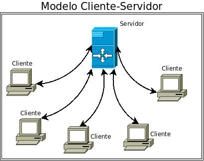

Arquitectura Nivel 2 (Cliente-Servidor)
La arquitectura en 2 niveles se utiliza para describir los sistemas cliente/servidor en donde el cliente solicita recursos y el servidor responde directamente a la solicitud, con sus propios recursos. Esto significa que el servidor no requiere otra aplicación para proporcionar parte del servicio. 
Ventajas:
- La rentabilidad necesita menos costes de mantenimiento y la recuperación de datos es posible.
- La capacidad de los clientes / servidores se cambiará por separado.
- Sistema centralizado con datos en un solo lugar.
Desventajas:
- Los clientes pueden ser propensos a virus, gusanos y troyanos si están presentes en un servidor / cargados en el servidor.
- El servidor puede ser propenso a ataques de denegación de servicio.
- Los paquetes de datos se modificarán o falsificarán durante la transmisión.
- El phishing y la captura de credenciales de inicio de sesión y otra información útil del usuario son bastante comunes y el ataque Man in a Middle será común.
Ejemplo
- Servidores de archivos: Son la ubicación centralizada de los archivos. Por ejemplo, se accederá a los servicios en la nube para Microsoft Office y Google docs desde sus dispositivos, y se accederá a los archivos que guarde desde la computadora desde su teléfono.
- Los servidores de correo electrónico se pueden utilizar para enviar y recibir correos electrónicos. Un software diferente permite el manejo del correo electrónico.